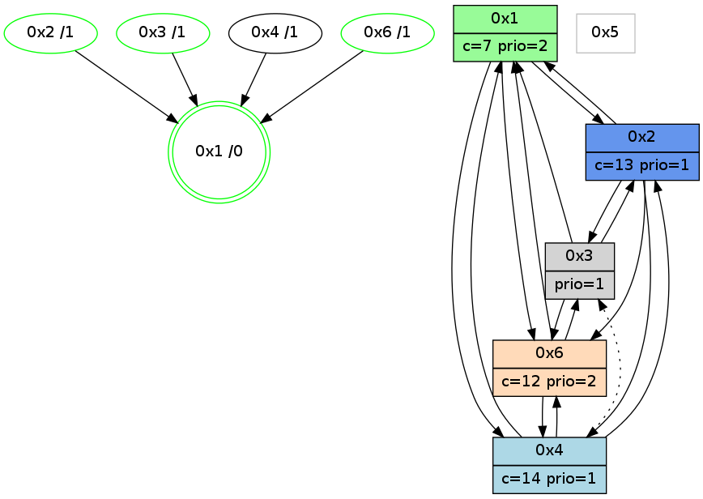

>> << IDX [start] -100 -25 -5 +0 +5 +25 +100 [1025.21099019]
 Previous packets
----------------------------------------------------------------------
1020.289909 beacon01(adaf) #0 coord=01,02,05,03,04,06 cycle=432.0ms assoc
-- color-indic=1 64 14 e5
1020.299869 beacon02(adaf) #0 coord=01,02,05,03,04,06 cycle=432.0ms assoc 64 45 1a
1020.309870 beacon05(adaf) #0 coord=01,02,05,03,04,06 cycle=432.0ms assoc 64 e3 30
1020.319870 beacon03(adaf) #0 coord=01,02,05,03,04,06 cycle=432.0ms assoc 64 7f 14
1020.329871 beacon04(adaf) #0 coord=01,02,05,03,04,06 cycle=432.0ms assoc 64 d9 3e
1020.339871 beacon06(adaf) #0 coord=01,02,05,03,04,06 cycle=432.0ms assoc 64 ad 22
1020.351581 [Hello(4): seq=827 sym=2,1,6 asym=3 sysInfo=hasWarning stat=2:10,12,0,0/1:12,9,3,0/6:4,12,11,4/3:5,5,1,1]
1020.354330 [Color(2) seq=213 @0:0 color=13 prio=1 c=7,c,e;1,4,6,8,9,b]
1020.355823 [Color(3) seq=155 @0:0 prio=1 c=7,c,d;1,4,6,8,9,b,e]
1020.361541 [Color(1) seq=253 @0:0 color=7 prio=2 c=1,4,6,8,9,b,c,d;0,2,3,5,a,e]
----------------------------------------------------------------------
1020.782017 beacon01(adaf) #0 coord=01,02,05,03,04,06 cycle=432.0ms assoc
-- color-indic=1 64 58 55
1020.791977 beacon02(adaf) #0 coord=01,02,05,03,04,06 cycle=432.0ms assoc 64 09 aa
1020.801978 beacon05(adaf) #0 coord=01,02,05,03,04,06 cycle=432.0ms assoc 64 af 80
1020.811977 beacon03(adaf) #0 coord=01,02,05,03,04,06 cycle=432.0ms assoc 64 33 a4
1020.821980 beacon04(adaf) #0 coord=01,02,05,03,04,06 cycle=432.0ms assoc 64 95 8e
1020.831979 beacon06(adaf) #0 coord=01,02,05,03,04,06 cycle=432.0ms assoc 64 e1 92
1020.846228 [Hello(6): seq=740 sym=4,2,1,3 sysInfo=hasWarning stat=4:6,0,3,0/2:6,1,6,2/1:7,7,13,1/3:2,13,3,7]
1020.849351 [Color(6) seq=212 @0:0 color=12 prio=2 c=7,d,e;1,4,6,8,9,b]
1020.853351 [Hello(1): seq=727 sym=2,4,6,3 sysInfo=hasWarning,coloring-mode-on,ColoringModeRequestCalled stat=2:1,2,9,3/4:9,0,7,0/6:0,14,1,3/3:1,3,2,1]
----------------------------------------------------------------------
1021.274124 beacon01(adaf) #0 coord=01,02,05,03,04,06 cycle=432.0ms assoc
-- color-indic=1 64 9c 3a
1021.284085 beacon02(adaf) #0 coord=01,02,05,03,04,06 cycle=432.0ms assoc 64 cd c5
1021.294085 beacon05(adaf) #0 coord=01,02,05,03,04,06 cycle=432.0ms assoc 64 6b ef
1021.304085 beacon03(adaf) #0 coord=01,02,05,03,04,06 cycle=432.0ms assoc 64 f7 cb
1021.314087 beacon04(adaf) #0 coord=01,02,05,03,04,06 cycle=432.0ms assoc 64 51 e1
1021.324087 beacon06(adaf) #0 coord=01,02,05,03,04,06 cycle=432.0ms assoc 64 25 fd
1021.335823 [Hello(4): seq=828 sym=2,1,6 asym=3 sysInfo=hasWarning stat=2:10,13,0,0/1:13,10,3,0/6:5,13,11,4/3:6,6,1,1]
1021.337826 [Color(1) seq=254 @0:0 color=7 prio=2 c=1,4,6,8,9,b,c,d;0,2,3,5,a,e]
1021.340031 [Color(3) seq=156 @0:0 prio=1 c=7,c,d;1,4,6,8,9,b,e]
1021.342208 [Color(2) seq=214 @0:0 color=13 prio=1 c=7,c,e;1,4,6,8,9,b]
----------------------------------------------------------------------
1021.766232 beacon01(adaf) #0 coord=01,02,05,03,04,06 cycle=432.0ms assoc
-- color-indic=1 64 c2 5b
1021.776192 beacon02(adaf) #0 coord=01,02,05,03,04,06 cycle=432.0ms assoc 64 93 a4
1021.786193 beacon05(adaf) #0 coord=01,02,05,03,04,06 cycle=432.0ms assoc 64 35 8e
1021.796192 beacon03(adaf) #0 coord=01,02,05,03,04,06 cycle=432.0ms assoc 64 a9 aa
1021.806194 beacon04(adaf) #0 coord=01,02,05,03,04,06 cycle=432.0ms assoc 64 0f 80
1021.816194 beacon06(adaf) #0 coord=01,02,05,03,04,06 cycle=432.0ms assoc 64 7b 9c
1021.827412 [Hello(1): seq=728 sym=2,4,6 sysInfo=hasWarning,coloring-mode-on,ColoringModeRequestCalled stat=2:1,3,9,3/4:9,0,7,0/6:0,14,1,3]
1021.829940 [Hello(6): seq=741 sym=4,2,1,3 sysInfo=hasWarning stat=4:7,0,3,0/2:6,2,6,2/1:8,8,13,1/3:3,14,3,7]
1021.833097 [Color(6) seq=213 @0:0 color=12 prio=2 c=7,d,e;1,4,6,8,9,b]
----------------------------------------------------------------------
1022.258340 beacon01(adaf) #0 coord=01,02,05,03,04,06 cycle=432.0ms assoc
-- color-indic=1 64 06 34
1022.268304 beacon02(adaf) #0 coord=01,02,05,03,04,06 cycle=432.0ms assoc 64 57 cb
1022.278301 beacon05(adaf) #0 coord=01,02,05,03,04,06 cycle=432.0ms assoc 64 f1 e1
1022.288302 beacon03(adaf) #0 coord=01,02,05,03,04,06 cycle=432.0ms assoc 64 6d c5
1022.298301 beacon04(adaf) #0 coord=01,02,05,03,04,06 cycle=432.0ms assoc 64 cb ef
1022.308302 beacon06(adaf) #0 coord=01,02,05,03,04,06 cycle=432.0ms assoc 64 bf f3
1022.320027 [Hello(4): seq=829 sym=2,1,6 asym=3 sysInfo=hasWarning stat=2:10,14,0,0/1:14,11,3,0/6:6,14,11,4/3:7,7,1,1]
1022.322763 [Color(2) seq=215 @0:0 color=13 prio=1 c=7,c,e;1,4,6,8,9,b]
1022.324241 [Color(3) seq=157 @0:0 prio=1 c=7,c,d;1,4,6,8,9,b,e]
1022.326191 [Color(1) seq=255 @0:0 color=7 prio=2 c=1,4,6,8,9,b,c,d;0,2,3,5,a,e]
----------------------------------------------------------------------
1022.750449 beacon01(adaf) #0 coord=01,02,05,03,04,06 cycle=432.0ms assoc
-- color-indic=1 64 4a 84
1022.760409 beacon02(adaf) #0 coord=01,02,05,03,04,06 cycle=432.0ms assoc 64 1b 7b
1022.770410 beacon05(adaf) #0 coord=01,02,05,03,04,06 cycle=432.0ms assoc 64 bd 51
1022.780410 beacon03(adaf) #0 coord=01,02,05,03,04,06 cycle=432.0ms assoc 64 21 75
1022.790411 beacon04(adaf) #0 coord=01,02,05,03,04,06 cycle=432.0ms assoc 64 87 5f
1022.800411 beacon06(adaf) #0 coord=01,02,05,03,04,06 cycle=432.0ms assoc 64 f3 43
1022.814689 [Hello(6): seq=742 sym=4,2,1,3 sysInfo=hasWarning stat=4:8,0,3,0/2:6,3,6,2/1:9,9,13,1/3:4,15,3,7]
1022.817813 [Color(6) seq=214 @0:0 color=12 prio=2 c=7,d,e;1,4,6,8,9,b]
1022.819653 [Hello(1): seq=729 sym=2,4,6 sysInfo=hasWarning,coloring-mode-on,ColoringModeRequestCalled stat=2:2,3,9,3/4:9,0,7,0/6:1,15,1,3]
1022.822360 [STC(1) #0.156 new-neigh,tree-change,inconsistent-stability,stable,to-color d=0]
----------------------------------------------------------------------
1023.242559 beacon01(adaf) #0 coord=01,02,05,03,04,06 cycle=432.0ms assoc
-- color-indic=1 64 8e eb
1023.252522 beacon02(adaf) #0 coord=01,02,05,03,04,06 cycle=432.0ms assoc 64 df 14
1023.262522 beacon05(adaf) #0 coord=01,02,05,03,04,06 cycle=432.0ms assoc 64 79 3e
1023.272521 beacon03(adaf) #0 coord=01,02,05,03,04,06 cycle=432.0ms assoc 64 e5 1a
1023.282520 beacon04(adaf) #0 coord=01,02,05,03,04,06 cycle=432.0ms assoc 64 43 30
1023.292523 beacon06(adaf) #0 coord=01,02,05,03,04,06 cycle=432.0ms assoc 64 37 2c
1023.304402 [STC(6)->1 #0.156 new-neigh,tree-change,inconsistent-stability,stable,to-color d=1]
1023.306435 [Color(1) seq=256 @0:0 color=7 prio=2 c=1,4,6,8,9,b,c,d;0,2,3,5,a,e]
1023.308136 [Hello(4): seq=830 sym=2,1,6 asym=3 sysInfo=hasWarning stat=2:10,15,0,0/1:15,12,4,0/6:6,15,11,4/3:8,8,1,1]
1023.310146 [STC(2)->1 #0.156 new-neigh,tree-change,inconsistent-stability,stable,to-color d=1]
1023.311988 [STC(4)->1 #0.156 new-neigh,tree-change,inconsistent-stability,to-color d=1]
1023.313377 [Color(2) seq=216 @0:0 color=13 prio=1 c=7,c,e;1,4,6,8,9,b]
1023.318274 [TreeStatus(6)-.->1 #0.156 new-neigh,tree-change,inconsistent-stability,stable child=1]
1023.320011 [STC(3)->1 #0.156 new-neigh,tree-change,inconsistent-stability,stable,to-color d=1]
1023.322305 [Color(3) seq=158 @0:0 prio=1 c=7,c,d;1,4,6,8,9,b,e]
----------------------------------------------------------------------
1023.734667 beacon01(adaf) #0 coord=01,02,05,03,04,06 cycle=432.0ms assoc
-- color-indic=1 64 c3 ec
1023.744627 beacon02(adaf) #0 coord=01,02,05,03,04,06 cycle=432.0ms assoc 64 92 13
1023.754627 beacon05(adaf) #0 coord=01,02,05,03,04,06 cycle=432.0ms assoc 64 34 39
1023.764628 beacon03(adaf) #0 coord=01,02,05,03,04,06 cycle=432.0ms assoc 64 a8 1d
1023.774628 beacon04(adaf) #0 coord=01,02,05,03,04,06 cycle=432.0ms assoc 64 0e 37
1023.784630 beacon06(adaf) #0 coord=01,02,05,03,04,06 cycle=432.0ms assoc 64 7a 2b
1023.798883 [Hello(6): seq=743 sym=4,1,3 sysInfo=hasWarning stat=4:8,0,3,0/1:10,9,14,1/3:5,0,4,7]
1023.801908 [Color(6) seq=215 @0:0 color=12 prio=2 c=7,d,e;1,4,6,8,9,b]
1023.806963 [Hello(1): seq=730 sym=2,4,6 sysInfo=hasWarning,coloring-mode-on,ColoringModeRequestCalled stat=2:2,4,10,3/4:10,0,8,0/6:1,15,1,4]
----------------------------------------------------------------------
1024.226774 beacon01(adaf) #0 coord=01,02,05,03,04,06 cycle=432.0ms assoc
-- color-indic=1 64 07 83
1024.236735 beacon02(adaf) #0 coord=01,02,05,03,04,06 cycle=432.0ms assoc 64 56 7c
1024.246736 beacon05(adaf) #0 coord=01,02,05,03,04,06 cycle=432.0ms assoc 64 f0 56
1024.256735 beacon03(adaf) #0 coord=01,02,05,03,04,06 cycle=432.0ms assoc 64 6c 72
1024.266737 beacon04(adaf) #0 coord=01,02,05,03,04,06 cycle=432.0ms assoc 64 ca 58
1024.276735 beacon06(adaf) #0 coord=01,02,05,03,04,06 cycle=432.0ms assoc 64 be 44
1024.288464 [Hello(4): seq=831 sym=2,1,6 asym=3 sysInfo=hasWarning stat=2:10,0,0,0/1:0,12,4,0/6:7,0,11,5/3:9,9,2,1]
1024.291197 [Color(2) seq=217 @0:0 color=13 prio=1 c=7,c,e;1,4,6,8,9,b]
1024.292687 [Color(3) seq=159 @0:0 prio=1 c=7,c,d;1,4,6,8,9,b,e]
1024.296041 [Color(1) seq=257 @0:0 color=7 prio=2 c=1,4,6,8,9,b,c,d;0,2,3,5,a,e]
----------------------------------------------------------------------
1024.718882 beacon01(adaf) #0 coord=01,02,05,03,04,06 cycle=432.0ms assoc
-- color-indic=1 64 4b 33
1024.728842 beacon02(adaf) #0 coord=01,02,05,03,04,06 cycle=432.0ms assoc 64 1a cc
1024.738844 beacon05(adaf) #0 coord=01,02,05,03,04,06 cycle=432.0ms assoc 64 bc e6
1024.748843 beacon03(adaf) #0 coord=01,02,05,03,04,06 cycle=432.0ms assoc 64 20 c2
1024.758844 beacon04(adaf) #0 coord=01,02,05,03,04,06 cycle=432.0ms assoc 64 86 e8
1024.768844 beacon06(adaf) #0 coord=01,02,05,03,04,06 cycle=432.0ms assoc 64 f2 f4
1024.780013 [Hello(1): seq=731 sym=2,4,6 sysInfo=hasWarning,coloring-mode-on,ColoringModeRequestCalled stat=2:2,4,10,3/4:10,0,8,0/6:1,15,1,4]
1024.782550 [Hello(6): seq=744 sym=4,1,3 sysInfo=hasWarning stat=4:9,0,3,0/1:11,10,14,1/3:6,1,4,7]
1024.787087 [Color(6) seq=216 @0:0 color=12 prio=2 c=7,d,e;1,4,6,8,9,b]